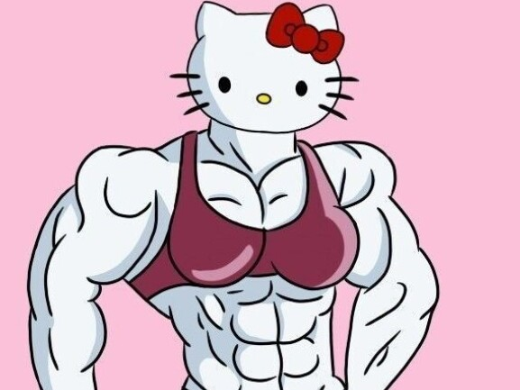
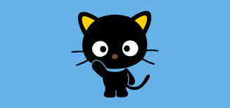
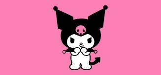
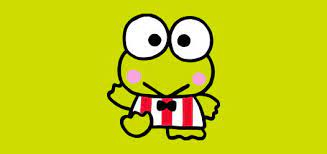

Hello Kitty
|  |
A Hello Kitty foi criada em 1974, pela designer Yuko Shimizu da empresa japonesa Sanrio, com o nome de Kitty White. Segundo a história da personagem, ela teria nascido em algum lugar no sul da Inglaterra, no dia 1 de novembro. Elatambém possui irmã gêmea, chamada Minny White, e mora no subúrbio de Londres junto de seus pais, George e Mary, e seu gatinho, Charmmy Kitty.
Descrita pela própria empresa como “uma garota feliz e com coração de ouro”, Kitty mede aproximadamente a altura de cinco maçãs e pesa o mesmo que três maçãs. Ela é uma ótima aluna que ama estudar inglês, música e arte, e que em seu tempo livre adora tocar piano, praticar esportes, fazer cookies e criar novas amizades. Não é atoa que seu lema é “Nunca é demais ter muitos amigos".
Além de ser uma personagem extremamente carismática, a Hello Kitty também trabalha duro ao redor do mundo para espalhar o bem em todos os cantos e levar amor e alegria para aqueles que precisam. “Na América Latina, a Hello Kitty visita muitos hospitais e casas de crianças. Ela também participou das ações do Teleton, que apoiam o tratamento de crianças com deficiência física, no México, Brasil e Peru”, diz a Sanrio sobre as ações sociais da personagem.
Internacionalmente, Kitty também é uma figura muito importante. Ela já foi uma das embaixadoras da UNICEF — órgão das Nações Unidas que trabalha pelo direito das crianças e adolescentes — e, atualmente, fez uma parceria com a ONU para promover os objetivos globais sustentáveis.
|  |  |
 |
 |  |